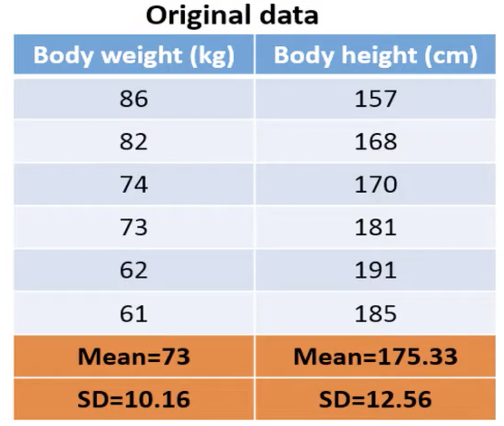
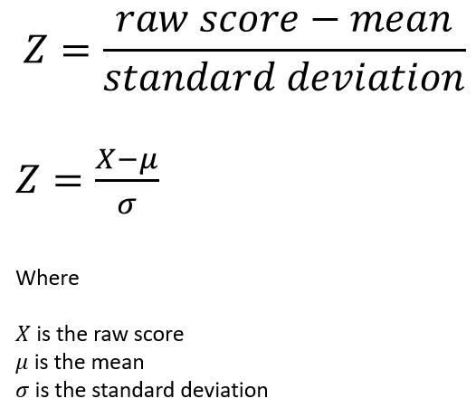
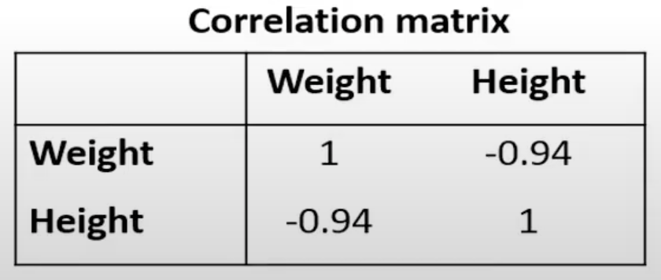
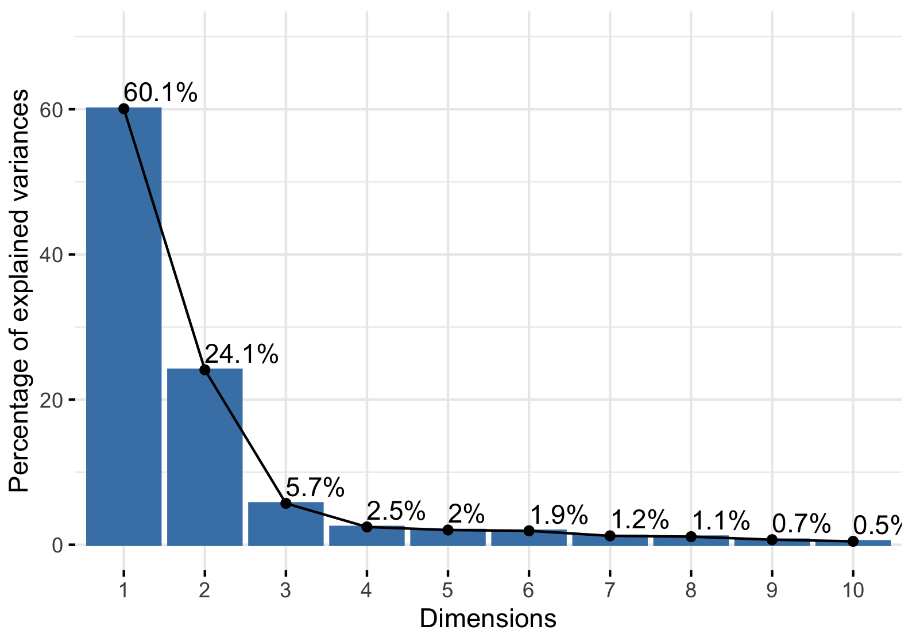

Detective Work for Data: How PCA Reveals Hidden Stories
Imagine you are analyzing a group of people, but you're not just curious about one trait like height... you're curious about many traits including height AND hair color, eye color, weight, and shoe size.
That’s a lot of variables about each person. How do you figure out what really sets them apart? Where are the biggest differences?
Principal Component Analysis (PCA) is a tool that can help you with that. It finds patterns in the chaos and highlights the differences that matter most—like a detective narrowing down a list of suspects to the most telling evidence.
In simple terms, a PCA:
- Combines related variables into a few new ones called principal components
- Helps you see patterns and trends more easily
- Keeps most of the original information—but with fewer variables
- Makes data visualization much clearer
Think of PCA like shrinking a playlist of 100 songs down to the top 10 that capture the whole vibe. You keep most of the story—just with fewer tracks.
Want to see it in action? In just five minutes, Josh Starmer clearly explains what PCA is and how it works, using intuitive visuals and simple language. It’s a helpful way to reinforce what you’ve just read, especially if you’re a visual learner.
Step-by-Step: How Does a PCA Work?
Step 1: Standardize the Data
Imagine you’re comparing people’s heights (in centimeters) and weights (in kilograms). The numbers are very different sizes; therefore, a PCA might treat height (cm) as a more important variable soley because the values of height (cm) are on a larger scale than the values of weight (kg).
We need the values to be on a level playing field, so we need to put them on the same scale. That’s what “standardizing” means.
Solution: We calculate a z-score for every value, so all values have a mean of 0 and are on the same scale.
Mathmatically, it looks like this:



Step 2: Find Relationships Between Variables
Next, we ask: Do some variables change together? For example: Do taller people usually weigh more?
To find out, we build a correrlation matrix—a table that shows how every pair of variables relates.
- 📈 Positive values = they go up together (e.g., As height increases/decreases, weight also increases/decreases.)
- 📉 Negative values = one goes up, the other goes down (e.g., As height increases, weight decreases.)
In this example, weight and height correlate negatively, meaning as height increase, weight decreases and vice versa.
Step 3: Identify the Principal Components
Once we know how variables move together, whether they’re positively or negatively related, the next step is to reorganize the data to make those patterns easier to see.
That’s where PCA steps in: it uses those relationships (from the correlation matrix) to build new, clearer axes. These are called principal components, and they help us see the biggest differences in the data.
The first principal component holds the most information. The second holds the next most, etc.
A scree plots visualizes how much information each principal component holds. Usually, you’ll only keep the first 2 or 3, which tell you most of what you need to know as shown below:
Step 4: Plot the Data
Now comes the behind-the-scenes math magic: PCA uses eigenvectors and eigenvalues to rotate the data and align it with the new principal components.
- Eigenvectors give the direction (our new axes).
- Eigenvalues tell us how important each direction is (i.e., how much variance they explain).
We use these to rebuild the data from a clearer angle. Then, we can plot it to spot clusters, trends, and outliers. Here are a few examples of PCA plots:
Let's Put This Into Action!
In the next section, we’ll walk through the actual PCA results from water quality data in Marion County, Indiana. You’ll see how this tool helps uncover pollution patterns in:
- Eagle Creek
- Fall Creek
- Lower White River
And we will answer big questions such as:
- What does the data tell us about water quality in the White River, Eagle Creek, and Fall Creek over the past two decades?
- Do pollutant levels vary between the White River, Eagle Creek, and Fall Creek? For example, Can we see unique pollution “signatures” in each waterway—like high nitrogen in one and low in another?